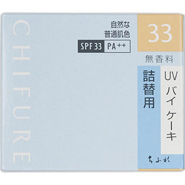

返回列表
产品名称：UV バイ ケーキ 詰替用 33 自然な普通肌色

ちふれ化粧品 UV バイ ケーキ 詰替用 33 自然な普通肌色 １４ｇ
メーカー ちふれ化粧品
JANコード 4974972202716
商品の特徴
SPF33 PA＋＋
無香料
- 成分・分量
- ＜全成分＞
着色成分：タルク（適量）、酸化チタン（適量）、ミリスチン酸亜鉛（適量）、オクテニルコハク酸デンプンAl（適量）、酸化鉄（適量）
感触改良成分：ナイロン-12（9.98％）、ポリメチルシルセスキオキサン（4.99％）
油性エモリエント成分：トリエチルヘキサノイン（3.02％）、セスキオレイン酸ソルビタン（0.98％）、ジメチコン（0.97％）、テトライソステアリン酸ペンタエリスリチル（0.97％）
サンスクリーン成分：メトキシケイヒ酸エチルヘキシル（4.85％）
ラスティング成分：パーフルオロアルキルリン酸DEA（0.11％）
表面処理剤：メチコン（適量）、水酸化Al（適量）、含水シリカ（適量）
防腐剤：メチルパラベン（0.20％）
成分の酸化防止剤：BHT（適量）
基剤：マイカ（全量を100％とする）
- 用法及び用量
- ＜使用方法＞
（水を使わない場合）化粧下地のあと、適量をスポンジにとり、顔全体にムラなくのばします。
（水を使う場合）化粧下地のあと、水を含ませ固くしぼったスポンジに適量をとり、顔全体にムラなくのばします。